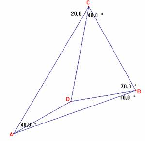

Problema 108
En la figura:
Se tiene ABC con D interior de manera que < ACD=20º, < DCB=40º, < CBD=70º, < DBA =10º.
Demostrar que AD es perpendicular a BC.

Propuesto por Juan Carlos Salazar, Profesor de Geometría del Equipo Olímpico
de Venezuela.
(Puerto Ordaz).
Olimpiada Matemática de Canadá 1998
Solución de F. Damián Aranda Ballesteros profesor de Matemáticas del IES Blas Infante en Córdoba (5 de julio de 2003)
Como quiera que en el punto D concurren las cevianas AD, BD y CD se tendrá, por el Teorema de Menelao, la siguiente relación:
; donde x =<DAB
Despejando:
. En definitiva:
sen x = 2×sen(40-x)×sen10 (1)
Observamos que, en efecto, para x=10 se verifica (1).
Veamos que para otro valor x¹10 no se verifica la anterior ecuación.
Sea x= 10+a,
y sustituyamos este valor en (1). De este modo, obtenemos:
sen (10+a) = 2×sen(30-a)×sen10
sen10×cosa + cos10×sena = 2×(sen30×cosa - cos30×sena)×sen10
(cos10+ sen10)× sen a =0 Þ a=0
En definitiva, el ángulo x=10 y así la ceviana AD corta perpendicularmente al lado BC, c.q.d.
Saludos de F. Damián Aranda Ballesteros.